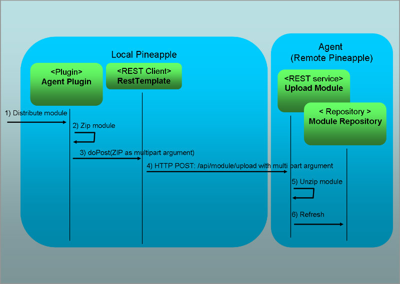

Development documentation
Generation of classes from XML schemas
The project uses JABX through the Maven 2 plugin maven-jaxb2-plugin to generate classes from XML schemas.
Customized package names
The generated classes are mapping into the package com.alpha.pineapple.plugin.agent.model using the JAXB bindings file at: src/main/resources/bindings.xjb.
Internal configuration
Logging
The plugin uses Log4j for logging. Each project which links to this project must provide a Log4j configuration which is accessible at runtime as a result of the build process.
For testing the project uses the Log4j configuration supplied by the pineapple-test-utils project.
Spring configuration file
The plugin contains a configuration file which defines a Spring application context. The Spring application context defines the input unmarshalling for the plugin. The file is located in src/main/resources/com.alpha.pineapple.plugin.agent-config.xml.
Implementation
Plugin class
The package com.alpha.pineapple.plugin.agent is the root package of the plugin and contains the plugin class PluginImpl.
Furthermore the package contains the interface AgentConstants which constant used by the plugin.
Session class
The package com.alpha.pineapple.plugin.agent.session contains the session classes for the plugin:
- AgentSession defines the interface for plugin session which handles the communication with remote agents.
- AgentSessionImpl extends the AgentSession interface and implements the communication layer using the Spring REST client RestTemplate.
Operation classes
The package com.alpha.pineapple.plugin.agent.operation contains the operation classes for the plugin.
The plugin implement these default operations:
- DefaultOperation implements the wild card operation *.
Model helper classes
The package com.alpha.pineapple.plugin.agent.model contains model mapper classes for mapping values from the plugin model (e.g. the schema generated classes) to the command contexts:
- Mapper defines the interface for mapping values defined in the plugin model to command contexts.
- MapperImpl implements the Mapper interface.
Spring RestTemplate configuration
The plugin application configures the Spring REST client RestTemplate.
RestTemplate is configured with these message converters which supports conversion from and to HTTP requests and responses:
- MarshallingHttpMessageConverter which uses a JAXB marshaller used for marshalling objects returned by REST web services. The marshaller supports marshalling/unmarshalling of these model classes:
- com.alpha.pineapple.model.execution.Results
- com.alpha.pineapple.model.execution.Result
- com.alpha.pineapple.model.execution.Messages
- com.alpha.pineapple.model.execution.Message
- com.alpha.pineapple.model.execution.MessageValue
- FormHttpMessageConverter which can convert form data, including multipart form data. Used for the file upload.
- StringHttpMessageConverter which can convert all media types (*/*), and writes with a Content-Type of text/plain.
RestTemplate is configured with the SimpleClientHttpRequestFactory in streaming mode ( bufferRequestBody = false) to support upload of large modules (1+ GB) by avoid loading the module into memory prior to uploading it.
Error Handling
The package com.alpha.pineapple.plugin.agent.utils contains classes to improve the error handling from for RestTemlpate:
- RestResponseErrorHandler which implements the ResponseErrorHandler interface to provide a customized error handler for exceptions returned by RestTemplate. The error handle captures the exception from RestTemplate and information from the HTTP response. The handler then throws a RestResponseException with all the collected data.
- RestResponseException used to signal in a REST reqest.
Commands
The package com.alpha.pineapple.plugin.agent.command contains Chain commands which invokes REST services at agents, the exact semantics of these services are described in the REST API documentation:
- CreateEnvironmentCommand creates a new environment at a remote agent.
- DistributeModuleCommand distributes a module to a remote remote agent.
- ExecuteOperationCommand executes an operation at a remote agent.
- RefreshEnvironmentConfigurationCommand refreshes the environment configuration at a remote agent.
- ScheduledOperationCommand scheduled operation for execution at a remote agent.
- DeleteScheduledOperationCommand deletes scheduled operation for execution at a remote agent.
- DeleteAllScheduledOperationCommand deletes all scheduled operations for execution at a remote agent.
Finally, some exceptions are defined:
- UnexpectedModelResponseException is used to signal a undefined response in the returned result model.
The commands invokes REST services a agents, the exact semantics of these services are described in the REST API documentation:
CreateEnvironmentCommand
Creates a new environment at a remote agent by invoking the Create Environment REST service.
DistributeModuleCommand
Distributes a module which is known to this Pineapple instance, e.g. is registered with the module repository. The command zip's the module and then uploads it to a remote agent by invoking the Upload Module REST service. At the agent, the module is unzipped and installed in Pineapple ready for usage.
ExecuteOperationCommand
Executes a operation at the remote Pineapple instance. The algorithm is:
- Invocation of the Execute Operation REST service. At the agent, execution of the module is started with the selected operation in the targeted environment.
- The agent then returns a resource for asynchronous updates, as described by the Execute Operation service.
- The command will poll for updates using the Get Operation Status service at the resource and transfer the execution results from the agent to the invoking Pineapple and add the results into the execution tree.
- When execution is completed the resource is deleted using the Delete Operation Status service.
Mapping of results from the received model results are implemented by the class ExecutionResultMapper in the Pineapple API project.
RefreshEnvironmentConfigurationCommand
Refreshes the environment configuration and reinitializes the core component at the remote Pineapple instance by invoking Refresh Environment Configuration REST service. At the agent, the core component is reinitialized and thus refreshes the environment configuration in the process.
ScheduleOperationCommand
Schedules operation at a remote agent by invoking the Schedule Operation REST service.
DeleteScheduleOperationCommand
Schedules operation at a remote agent by invoking the Delete Scheduled Operation REST service.
DeleteAllScheduledOperationsCommand
Schedules operation at a remote agent by invoking the Delete Scheduled Operations REST service.